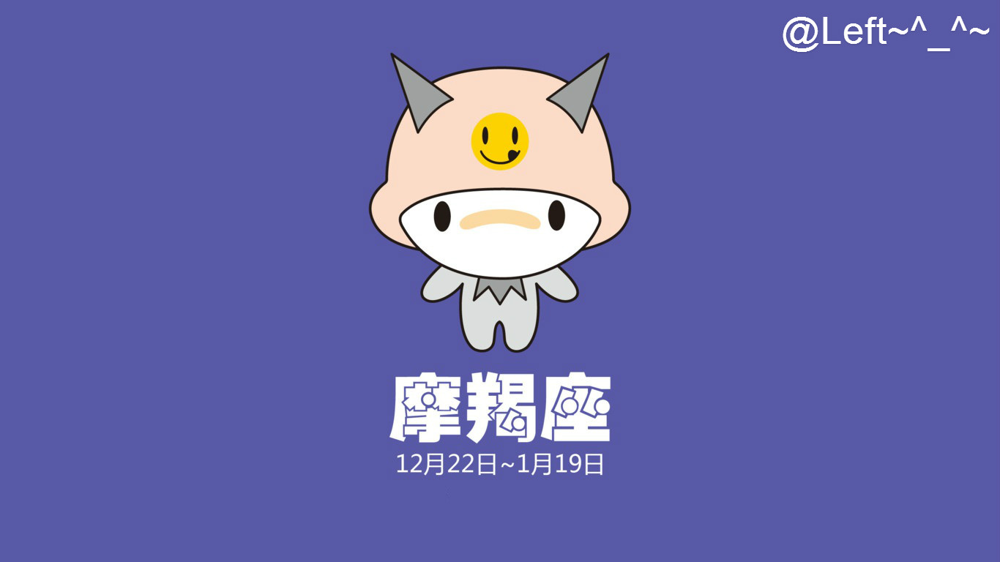
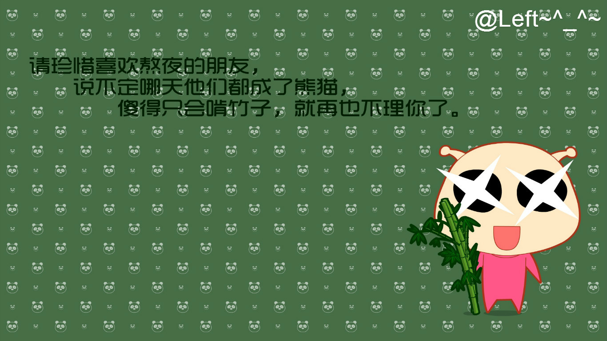

黄道十二宫之第五宫，出生日期为7月23日~8月22日，位于巨蟹座之东，处女座之西。
为人博爱，花钱大方，思想开阔，热心、慷慨，具创新能力，不多疑、乐观，一言九鼎有信用，具有激励人心的气质，对戏剧和表演具有天份
黄道十二宫的第十宫，出生日期为12月22日—1月19日，位于射手座之东，水瓶座之西。
会表现的酷酷的，与事隔离的样子，其实他们只是不希望，别人看到自己脆弱的一面。坚强、理智、承受、隐忍，都是摩羯的代名词。
天秤座是灵敏的，只要一阵微风，便足以使之轻颤不已。天秤座人的心思正是一座灵敏的秤子。他徘徊于正、反之间，摇摆于左、右之间；反复思索的频率极高，摆幅极小。
凡事要求公平，也极力反对不公平的事，是天秤座最令人敬畏的地方。他对于不合理的事，采取激烈的态度，不是愤怒，便是冷漠以对。